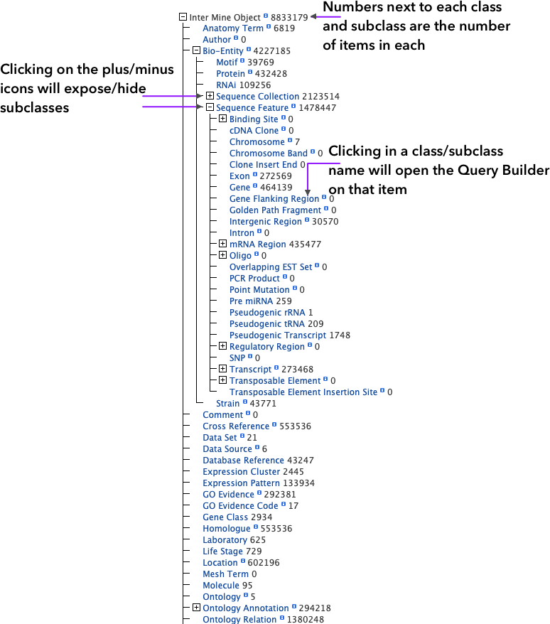

Data Model
WormMine Model is the main backbone of the data organization in the database. WormMine is built by a combination of different data sources (GFF3, FASTA, AceDB dumps, etc) that are loaded and organized in different tables. InterMine code at the moment of building the database takes clues from guiding files that indicated relationships between the different data types and items, at the same time that items with identical IDs are
merged in the same table row. While the tables are being created, InterMine starts creating joins and other tables that follow the elements relationships. This complex and intricate network of items and their classes form the structure of the main data model.
The Data Model display is quite dry, but gives a good perspective on all the classes and subclasses included in WormMine and the number of elements contained in each. Bio-Entity is the largest class available and it covers most of the gene/protein related items. Clicking on the plus/minus signs will expose or hide the subclasses. Numbers next to each name are the number of items contained in the class/subclass.

Clicking on the class/subclass name will open the
QueryBuilder on that particular class.